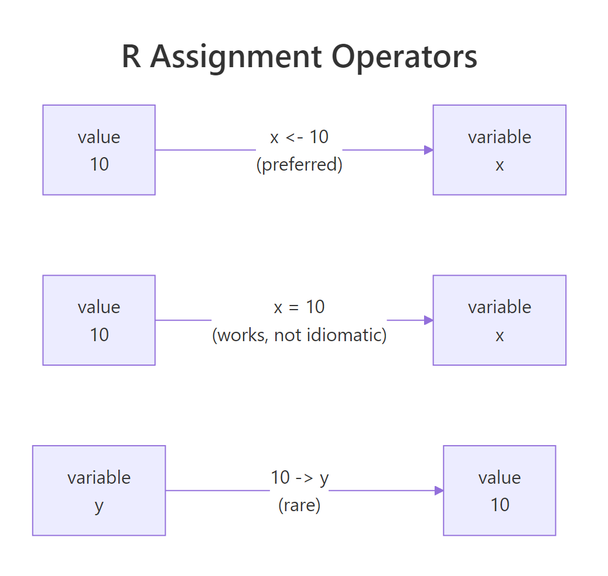
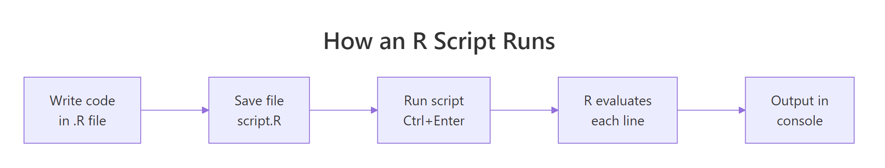
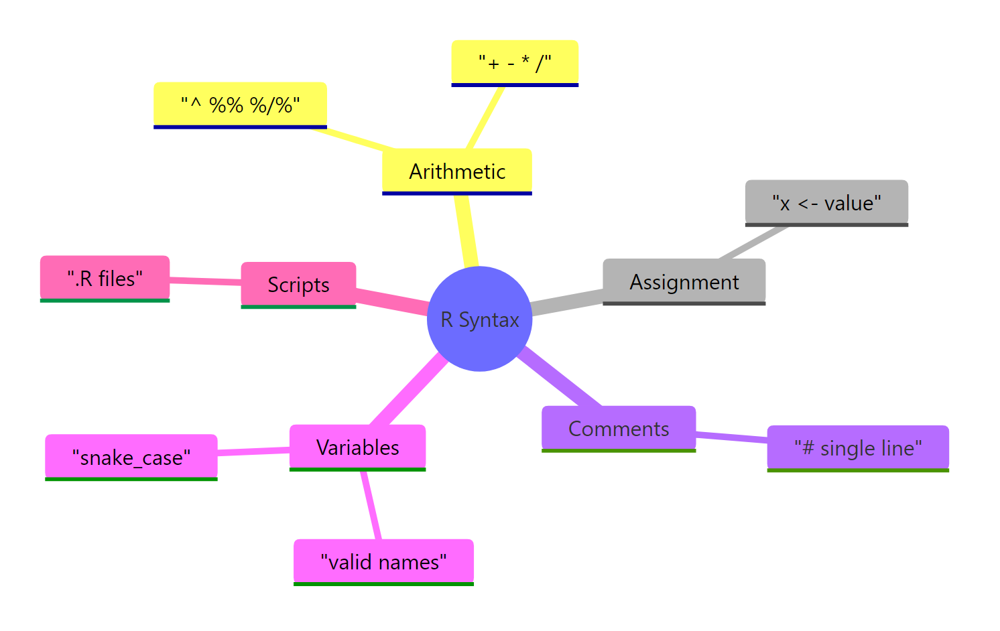

R Syntax 101: Write Your First Working Script in 10 Minutes
R's core syntax is refreshingly small. Learn five ideas — arithmetic operators, variable assignment with <-, hash comments, naming rules, and running a .R script — and you can read nearly any R code you'll ever encounter.
How do you run your first line of R code?
The fastest way to understand R is to type an expression and watch R answer back. Open RStudio, click inside the console at the bottom, and every line you type is evaluated the moment you press Enter — no compile step, no build. R is an interactive calculator that happens to also run whole scripts. Here's a three-line example that shows arithmetic, assignment, and printing in one go.
Try typing each of the four lines below. R prints the answer right under each expression that returns a value.
That tiny snippet already uses three of the five syntax elements we'll cover. Line 1 is pure arithmetic: R evaluates 2 + 2 and prints 4. The strange [1] at the front is R's row index — R prints results as vectors, and [1] means "this is the first element". You can ignore it for now. Line 2 uses the <- operator to store the number 10 in a variable called x. Line 3 does the same, but reuses x in the calculation. Line 4 simply types y, and R echoes its value back.
Try it: Store your age in seconds in a variable called ex_age_seconds. A year has roughly 31,557,600 seconds.
Click to reveal solution
Explanation: Multiplying your age in years by the number of seconds in a year gives the total. Replace 30 with your own age.
What arithmetic operators does R support?
R supports seven arithmetic operators. Five of them are the usual suspects you'd find on a calculator — addition, subtraction, multiplication, division, and exponentiation. The other two are handy for integer math: modulo (remainder) and integer division. You'll use the first five constantly; the last two show up in loops, hashing, and date calculations.
Let's run every operator in a single block so you can see the results side by side.
Two things are worth noting. First, / in R always returns a decimal, even when both operands are whole numbers — 5 / 2 gives 2.5, not 2. If you want the integer part, use %/%. Second, ^ is the exponent operator, not ** — that's a Python habit you'll have to drop.
Operator precedence in R follows standard math rules: exponentiation first, then multiplication and division, then addition and subtraction. When in doubt, use parentheses to force the order you want.
The first expression evaluates 3 * 4 = 12, then adds 2 to get 14. The second forces the addition to happen first, so you get 5 * 4 = 20. Small difference, big consequences — a stray missing parenthesis is a classic bug source in scientific code.
(x - mean(x)) / sd(x) is clearer than trusting everyone to remember that division binds tighter than subtraction.Try it: Compute the area of a rectangle that is 12.5 units wide and 8 units tall, and store it in ex_area.
Click to reveal solution
Explanation: Area of a rectangle is width × height. Parentheses are unnecessary here because there's only one operation.
How do you assign values to variables in R?
A variable is a name attached to a value. Once you've stored a number, a string, or an entire dataset in a variable, you can recall it later and use it in other calculations. R has three ways to assign values, but only one is considered good style. The figure below shows the three directions side by side.

Figure 1: Three ways to assign in R — <- (idiomatic), = (valid but reserved for function arguments), and -> (rare right-to-left form).
Let's see all three operators in action. Every line below stores the number 10 in a variable, just using different syntax.
All three variables now hold the same value. But even though they're functionally equivalent at the top level, the R community has overwhelmingly settled on <-. Every style guide — tidyverse, Google, Bioconductor — prefers it, so nearly all R code you'll read uses left-arrow.
<- and = are not identical everywhere. Inside function calls like mean(x = 1:10), the = is naming an argument, not assigning a variable. If you accidentally write <- there, R will create a new top-level variable called x as a side effect. That is why R programmers reserve = for arguments and <- for everything else — it keeps the two meanings visually separate.You can reassign variables as often as you like. R does not complain; it just replaces the old value with the new one. Variable names are also case-sensitive — counter and Counter are two completely different variables.
Notice how counter + 1 uses the current value of counter on the right side before the new value is assigned on the left. This "read old value, write new value" pattern is how counters and accumulators work in nearly every programming language.
= with ==. A single = is assignment (or argument naming). A double == is a comparison that returns TRUE or FALSE. Writing if (x = 5) when you meant if (x == 5) is a silent bug: the first assigns 5 to x and then checks whether 5 is truthy.Try it: You have two variables ex_a <- 1 and ex_b <- 2. Swap their values using a temporary variable ex_temp, so that at the end ex_a is 2 and ex_b is 1.
Click to reveal solution
Explanation: You need the temporary variable because the moment you write ex_a <- ex_b, the original ex_a is lost. Save it in ex_temp first, then overwrite.
How do comments make R code readable?
A comment is a note to yourself (or the next reader) that R ignores while running the code. In R, the hash symbol # starts a comment that runs to the end of the line. Everything after the # is skipped by the interpreter. R has no multi-line comment syntax like /* ... */ in C or """...""" in Python — if you want a paragraph of explanation, put # at the start of every line.
Comments serve two purposes. First, they explain why a line exists, not what it does (the code itself already tells you what). Second, they let you temporarily disable a line of code without deleting it, which is handy when debugging.
Three kinds of comments appear here. The first line is a whole-line comment explaining the block's purpose. The next two have trailing comments describing each variable. The # total <- price + 50 line is a commented-out expression — useful when you want to keep old logic around for reference or to undo a change quickly.
Try it: Add a trailing comment to each line below explaining what the line does in plain English.
Click to reveal solution
Explanation: Good trailing comments explain units, sources, or the "why" behind a magic number — not just what the operator does.
What are the rules for naming R variables?
R is flexible about variable names, but it's not a free-for-all. A valid R name must start with a letter or a dot (.), and after that can contain letters, digits, dots, and underscores. It cannot start with a digit, cannot contain spaces or most symbols, and cannot be one of R's reserved words like TRUE, FALSE, NULL, if, or function.
All five names work, but a few would fail. 2x <- 1 is invalid because the name starts with a digit. my-var <- 1 is invalid because R reads the - as subtraction. if <- 1 is invalid because if is a reserved keyword. R will throw an "unexpected symbol" or "invalid assignment" error on any of those.
user_name, total_sales, fit_model. Avoid dots in new variable names: my.data looks like it might be a method call on my, and historically that has caused confusion in R's S3 object system. Dots in names are valid, just not recommended.Try it: Three of the variable names below are invalid. Rewrite them so they work and store the value on the right.
Click to reveal solution
Explanation: The fixes follow the three rules: start with a letter, no spaces, no special symbols. Underscores are the safest separator.
How do you write and run a complete R script?
Typing lines into the console is great for quick experiments, but anything you want to keep — analyses, reports, pipelines — belongs in a script file. An R script is nothing fancier than a plain text file with a .R extension that contains the same lines you'd type into the console. You save it, open it in RStudio, and run it.

Figure 2: How R evaluates a script — write, save, run, see output. No separate compile step.
There are three common ways to run code from a script file in RStudio. You can put the cursor on any line and press Ctrl+Enter (Cmd+Enter on Mac) to run just that line. You can select several lines and press the same keys to run the selection. Or you can press Ctrl+Shift+Enter to source the entire file in one go. No matter which you pick, R evaluates the lines top to bottom in the order they appear.
Here is a complete working script you can paste into a file called temperature.R and run. It converts a Celsius temperature to Fahrenheit.
Read the script top to bottom. Comments mark each step so a future reader can follow along. The formula uses operator precedence: celsius * 9 / 5 is computed left to right before + 32 is added. Change celsius to any number and rerun the script — that is the core workflow of almost every R analysis you'll ever write.
Try it: Modify the script so it converts kilograms to pounds instead. The conversion is pounds = kilograms * 2.20462.
Click to reveal solution
Explanation: Same three-step shape as the temperature script: define the input, apply the formula, print the result. That shape will turn up in nearly every script you write.
Practice Exercises
These capstone problems combine several ideas from above. Work through them without peeking at the solutions — the struggle is where the learning happens.
Exercise 1: BMI Calculator
Write a short script that computes Body Mass Index from a person's weight (kg) and height (metres). The formula is BMI = weight / height^2. Use variables called my_weight, my_height, and my_bmi, and add comments explaining each step.
Click to reveal solution
Explanation: The ^2 raises my_height to the power of 2, and division happens after (exponentiation binds tighter than division in R). A result around 23 puts this person in the "healthy" range on the standard BMI scale.
Exercise 2: Compound Interest
An investment of my_principal dollars grows at an annual interest rate my_rate (as a decimal, so 5% is 0.05) for my_years years. Compound-interest growth is final = principal * (1 + rate)^years. Compute the final amount for $1000 at 5% over 10 years.
Click to reveal solution
Explanation: Parentheses are essential around 1 + my_rate — without them, R would compute my_rate^my_years first due to operator precedence, giving a completely wrong answer. After 10 years, $1000 grows to about $1628.89.
Exercise 3: Rectangle Analyzer
Given my_width <- 4 and my_height <- 3, compute and store three values: my_area (width × height), my_perimeter (twice the sum of width and height), and my_diagonal (the square root of width² + height², which you can compute with ^0.5).
Click to reveal solution
Explanation: The perimeter formula needs parentheses around my_width + my_height so the addition happens before the multiplication by 2. The diagonal uses the Pythagorean theorem, and ^0.5 is a quick way to take a square root without calling sqrt(). You just computed the classic 3-4-5 right triangle.
Putting It All Together
Let's close with a complete, realistic script that uses every idea from this post in one place: a tip calculator that splits a restaurant bill. Read it top to bottom and notice how comments, assignment, arithmetic, and clear names work together.
Every line is either a comment, a variable assignment, or a printed result. The arithmetic uses *, +, and /. The variable names are lowercase with underscores. The script runs top to bottom, with later lines reusing values computed earlier. Change any input at the top and rerun to get new answers. That is the complete mental model for writing R scripts — you now have all five syntax elements working together to solve a real problem.
Summary
The picture below is a visual recap of everything covered. Five small ideas are all it takes to read most R code.

Figure 3: The five core R syntax elements covered in this post, at a glance.
| Element | One-line summary | Example |
|---|---|---|
| Arithmetic | Seven operators: + - * / ^ %% %/% |
5 + 2, 5 ^ 2, 5 %% 2 |
| Assignment | <- is the idiomatic way to store a value |
x <- 10 |
| Comments | # starts a comment that runs to end of line |
x <- 10 # dollars |
| Naming | Start with a letter or dot; use snake_case | my_total, user_name |
| Scripts | A .R file of lines R runs top to bottom |
temperature.R above |
Master these, and the rest of R — vectors, data frames, functions, packages — is just more structure built on top. You haven't learned everything, but you've learned the grammar that everything else speaks.
References
- R Core Team. An Introduction to R. CRAN. Link
- R Core Team. R Language Definition. CRAN. Link
- Wickham, H. Advanced R, 2nd Edition. Chapman & Hall, 2019. Chapter 2: Names and values. Link
- Wickham, H. & Grolemund, G. R for Data Science, 2nd Edition. O'Reilly, 2023. Chapter 2: Workflow basics. Link
- The tidyverse style guide — Syntax. Link
- Posit. RStudio IDE User Guide. Link
- R FAQ — CRAN. Link
Continue Learning
- R Data Types — numeric, character, logical, and the other fundamental types you'll store in your newly-named variables.
- R Vectors — the workhorse data structure of R. Everything you assign with
<-is secretly a vector. - Writing R Functions — package the scripts you just wrote into reusable functions you can call with a single line.